SPL & Operasi Baris Elementer
Semua soal SPL di UTS — mau disuruh pakai Gauss-Jordan, invers, atau Cramer — berakar di satu skill: mengubah sistem jadi matriks, lalu merapikan matriks itu tanpa mengubah solusinya. Kalau ini kuat, tiga metode lain cuma variasi di ujungnya.
Analogi: neraca dapur
Bayangkan tiga resep yang jumlah bahannya sama. Kalau lu mengganti satu resep dengan “resep A ditambah resep B”, total bahannya tetap sama — informasinya tidak hilang, cuma ditulis ulang. OBE itu persis itu: mengombinasikan baris supaya angkanya gampang, tanpa mengubah siapa yang memenuhi sistem.
Sistem \(2x - y = 4,\; x + 3y = 9\) ditulis sebagai matriks koefisien dan vektor konstanta:
\[ A=\begin{pmatrix}2&-1\\1&3\end{pmatrix},\qquad b=\begin{pmatrix}4\\9\end{pmatrix},\qquad [A\mid b]=\begin{pmatrix}2&-1&4\\1&3&9\end{pmatrix} \]Tiga aturan penulisan: urutan kolom mengikuti urutan variabel (tulis di atas kertas: \(x, y, z\)), variabel yang tidak muncul ditulis 0, dan tanda sama dengan diganti garis vertikal. Titik dua di jawaban akhir jangan ditulis lagi — matriks augmentasi itu alat, bukan jawaban.
| Operasi | Notasi | Efek pada solusi |
|---|---|---|
| Tukar dua baris | \(R_1 \leftrightarrow R_3\) | Tidak berubah |
| Kalikan baris dengan \(k\neq 0\) | \(R_2 \leftarrow kR_2\) | Tidak berubah (asal \(k\neq0\)) |
| Tambahkan kelipatan baris lain | \(R_3 \leftarrow R_3 - 2R_1\) | Tidak berubah |
Kebiasaan yang menyelamatkan nilai: tulis notasi operasinya di kiri matriks, satu baris per langkah. Kalau ada langkah yang salah, dosen bisa lihat maksud lu, dan lu sendiri bisa lacak balik.
Row Echelon Form (REF) — bentuk eselon baris:
- Semua baris nol diletakkan paling bawah.
- Elemen tak nol pertama tiap baris adalah 1 (disebut leading 1).
- Leading 1 pada baris bawah selalu lebih ke kanan daripada baris di atasnya.
Reduced REF (RREF) = REF + satu syarat lagi:
- Setiap kolom yang punya leading 1 bernilai 0 di semua posisi lain (atas dan bawah).
Jadi REF masih boleh punya angka di atas leading 1; RREF tidak. Eliminasi yang berhenti di REF = Gauss (lanjut substitusi balik). Yang sampai RREF = Gauss-Jordan (solusi langsung kebaca).
Langkah 1 — matriks augmentasi
\[ \left(\begin{array}{ccc|c}1&1&1&6\\2&-1&1&3\\1&2&-1&2\end{array}\right) \]Langkah 2 — nolkan kolom pertama di bawah pivot
Pivot-nya \(a_{11}=1\). Eliminasi: \(R_2 \leftarrow R_2-2R_1\), \(R_3 \leftarrow R_3-R_1\).
\[ \left(\begin{array}{ccc|c}1&1&1&6\\0&-3&-1&-9\\0&1&-2&-4\end{array}\right) \]Langkah 3 — tukar supaya pivot kolom 2 jadi 1
\(R_2 \leftrightarrow R_3\) (boleh, solusi tidak berubah) — jauh lebih enak daripada membagi dengan \(-3\):
\[ \left(\begin{array}{ccc|c}1&1&1&6\\0&1&-2&-4\\0&-3&-1&-9\end{array}\right) \]Langkah 4 — nolkan bawah pivot kedua
\(R_3 \leftarrow R_3+3R_2\):
\[ \left(\begin{array}{ccc|c}1&1&1&6\\0&1&-2&-4\\0&0&-7&-21\end{array}\right) \xrightarrow{R_3 \leftarrow -\frac17 R_3} \left(\begin{array}{ccc|c}1&1&1&6\\0&1&-2&-4\\0&0&1&3\end{array}\right) \]Langkah 5 — fase balik (jadi RREF)
\(R_2 \leftarrow R_2+2R_3\) lalu \(R_1 \leftarrow R_1-R_3\):
\[ \left(\begin{array}{ccc|c}1&1&0&3\\0&1&0&2\\0&0&1&3\end{array}\right) \xrightarrow{R_1 \leftarrow R_1-R_2} \left(\begin{array}{ccc|c}1&0&0&1\\0&1&0&2\\0&0&1&3\end{array}\right) \]| Yang terlihat di RREF | Artinya | Contoh baris penentu |
|---|---|---|
| Leading 1 di setiap kolom variabel | Solusi tunggal (konsisten) | \(\begin{pmatrix}1&0&3\\0&1&2\end{pmatrix}\) |
| Ada kolom variabel tanpa leading 1 | Tak hingga solusi — kolom itu jadi variabel bebas | \(\begin{pmatrix}1&0&2&3\\0&1&-1&1\end{pmatrix}\) |
| Baris berbentuk \(0=1\) (\([0\;0\;0\mid c]\), \(c\neq0\)) | Tidak ada solusi (inkonsisten) | \(\begin{pmatrix}1&-1&2\\0&0&1\end{pmatrix}\) |
Aturan bacanya cuma satu: garis vertikal itu harga mati. Kalau kolom kiri nol semua tapi kanan bukan nol, sistem meminta \(0\) sama dengan angka bukan nol — mustahil, tidak peduli variabelnya berapa.
Langkah 1–2 — augmentasi lalu eliminasi
\(R_2 \leftarrow R_2-2R_1\) langsung menghasilkan baris nol (persamaan kedua cuma 2× persamaan pertama — tidak membawa informasi baru). \(R_3 \leftarrow R_3-R_1\):
\[ \left(\begin{array}{ccc|c}1&1&1&4\\0&0&0&0\\0&-2&-1&-2\end{array}\right) \xrightarrow{R_2 \leftrightarrow R_3,\; R_2 \leftarrow -\frac12 R_2} \left(\begin{array}{ccc|c}1&1&1&4\\0&1&\frac12&1\\0&0&0&0\end{array}\right) \]Langkah 3 — fase balik
\(R_1 \leftarrow R_1-R_2\):
\[ \left(\begin{array}{ccc|c}1&0&\frac12&3\\0&1&\frac12&1\\0&0&0&0\end{array}\right) \]Langkah 4 — baca sebagai persamaan dan beri parameter
Kolom \(z\) tidak punya leading 1 → \(z\) variabel bebas, misal \(z=t\):
\[ x+\tfrac12 t=3 \Rightarrow x=3-\tfrac12 t,\qquad y+\tfrac12 t=1 \Rightarrow y=1-\tfrac12 t \]Homogen = semua konstanta nol (\(Ax=0\)). Konsekuensinya:
- Selalu konsisten — minimal ada solusi trivial \(x=0\).
- Jadi hanya ada dua kemungkinan: hanya trivial, atau tak hingga solusi (trivial + nontrivial).
- Kalau jumlah variabel > jumlah persamaan, pasti ada solusi nontrivial.
- Kalau RREF punya \(r\) baris tak nol dan \(n\) variabel, banyak variabel bebas \(= n-r\).
Ini bakal kepakai di modul vektor: uji independensi linear itu persis “apakah sistem homogen ini hanya punya solusi trivial”.
Cek jawaban
Cek jawaban
Cek jawaban
Operasi Matriks
Bagian ini soalnya biasanya pendek, tapi jebakannya halus: urutan perkalian, syarat ukuran, dan transpose produk. Modal utamanya cuma ketelitian.
Matriks \(A\) berukuran \(m\times n\): \(m\) baris, \(n\) kolom. Entri di baris \(i\), kolom \(j\) ditulis \(a_{ij}\). \(A=B\) hanya jika ukuran sama dan semua entri bersesuaian sama.
| Nama | Ciri |
|---|---|
| Persegi | \(m=n\) (punya diagonal utama) |
| Identitas \(I_n\) | Diagonal utama 1, lainnya 0; \(AI=IA=A\) |
| Diagonal | Semua entri luar diagonal utama 0 |
| Segitiga atas / bawah | Di bawah / di atas diagonal utama semuanya 0 |
| Simetris | \(A^T=A\) (entri bercermin terhadap diagonal) |
| Nol | Semua entri 0 |
Perkalian bukan “kali posisi yang sama”. Ini sumber kesalahan nomor satu. Cara cepat mengecek: tulis ukuran di samping matriks, \((2\times3)(3\times2)\) — angka tengah harus sama, hasilnya \((2\times2)\).
\(AB\)
\[ AB=\begin{pmatrix}(1)(0)+(2)(2)&(1)(1)+(2)(-1)\\(3)(0)+(4)(2)&(3)(1)+(4)(-1)\end{pmatrix}=\begin{pmatrix}4&-1\\8&-1\end{pmatrix} \]\(BA\)
\[ BA=\begin{pmatrix}(0)(1)+(1)(3)&(0)(2)+(1)(4)\\(2)(1)+(-1)(3)&(2)(2)+(-1)(4)\end{pmatrix}=\begin{pmatrix}3&4\\-1&0\end{pmatrix} \]\(A^T\) = tukar baris dan kolom: \((A^T)_{ij}=a_{ji}\). Ukuran \(m\times n\) jadi \(n\times m\).
Trace \(= \operatorname{tr}(A)\) = jumlah entri diagonal utama. Hanya untuk matriks persegi. Sifat yang dipakai: \(\operatorname{tr}(A+B)=\operatorname{tr}A+\operatorname{tr}B\) dan \(\operatorname{tr}(AB)=\operatorname{tr}(BA)\).
Verifikasi cepat dengan contoh di atas: \(AB=\begin{pmatrix}4&-1\\8&-1\end{pmatrix}\) → \((AB)^T=\begin{pmatrix}4&8\\-1&-1\end{pmatrix}\). Dari sisi lain \(B^T=\begin{pmatrix}0&2\\1&-1\end{pmatrix}\), \(A^T=\begin{pmatrix}1&3\\2&4\end{pmatrix}\), maka \(B^TA^T=\begin{pmatrix}4&8\\-1&-1\end{pmatrix}\) ✓ sama.
| Sifat | Bentuk |
|---|---|
| Distributif | \(A(B+C)=AB+AC\), \((A+B)C=AC+BC\) |
| Asosiatif | \((AB)C=A(BC)\) |
| Identitas | \(AI=IA=A\) |
| Skalar | \(k(AB)=(kA)B=A(kB)\) |
| Pangkat | \(A^pA^q=A^{p+q}\), \((A^p)^q=A^{pq}\) (untuk \(A\) persegi) |
| Tidak berlaku | \(AB=BA\) ✗, \(AB=0 \Rightarrow A=0\) atau \(B=0\) ✗, \((A+B)^2=A^2+2AB+B^2\) ✗ |
Contoh pembalasan yang terakhir: \(A=\begin{pmatrix}1&0\\0&0\end{pmatrix}\), \(B=\begin{pmatrix}0&0\\1&1\end{pmatrix}\) → \(AB=\begin{pmatrix}0&0\\0&0\end{pmatrix}\) padahal \(A,B\neq0\). Matriks punya “pembagi nol”, jadi jangan pernah membagi kedua ruas dengan matriks.
Cek jawaban
Cek jawaban
Cek jawaban
Determinan
Determinan itu satu angka yang dirangkum dari matriks persegi. Gunanya di ujian ada tiga: (1) menentukan matriks punya invers atau tidak, (2) jadi penyebut Aturan Cramer, (3) jadi alat cek independensi vektor. Jadi bukan tujuan akhir — dia pintu masuk.
Analogi: luas yang berubah skala
Matriks \(2\times2\) bisa dibaca sebagai “mesin yang mengubah bidang”: titik \((1,0)\) dipindah ke kolom pertama, \((0,1)\) ke kolom kedua. Determinan = berapa kali luas berubah. Kalau hasilnya 0, bidang dipencet jadi garis — informasinya hilang, dan itulah kenapa tidak ada invers.
Contoh: \(\det\begin{pmatrix}3&4\\2&5\end{pmatrix}=15-8=7\). Perhatikan urutannya: kali silang turun dikurangi kali silang naik. Kalau kebalik, tandanya salah dan semua jawaban di bawahnya ikut salah.
Minor \(M_{ij}\): determinan submatriks setelah baris \(i\) dan kolom \(j\) dibuang.
Kofaktor \(C_{ij}=(-1)^{i+j}M_{ij}\). Tanda \((-1)^{i+j}\) membentuk pola papan catur:
\[ \begin{pmatrix}+&-&+\\-&+&-\\+&-&+\end{pmatrix} \]Jadi untuk \(A=\begin{pmatrix}2&-3&1\\2&0&-1\\1&4&5\end{pmatrix}\): \(C_{11}=+\det\begin{pmatrix}0&-1\\4&5\end{pmatrix}=0+4=4\); \(C_{12}=-\det\begin{pmatrix}2&-1\\1&5\end{pmatrix}=-(10+1)=-11\); \(C_{13}=+\det\begin{pmatrix}2&0\\1&4\end{pmatrix}=8\).
Pilih satu baris atau satu kolom — bebas, hasilnya sama. Paling enak: baris/kolom yang paling banyak nol, karena sukunya langsung hilang.
\[ \det A=\sum_{j=1}^{n} a_{ij}C_{ij}=\sum_{j=1}^{n}(-1)^{i+j}a_{ij}M_{ij} \]Contoh tadi, ekspansi baris 1:
\[ \det A = 2(4)+(-3)(-11)+1(8) = 8+33+8 = 49 \]Salin dua kolom pertama ke kanan, lalu jumlah diagonal turun dikurangi jumlah diagonal naik:
\[ \det A=a_{11}a_{22}a_{33}+a_{12}a_{23}a_{31}+a_{13}a_{21}a_{32}-a_{13}a_{22}a_{31}-a_{11}a_{23}a_{32}-a_{12}a_{21}a_{33} \]Untuk matriks yang sama:
| turun | \(2\cdot0\cdot5=0\) | \((-3)(-1)(1)=3\) | \(1\cdot2\cdot4=8\) |
| naik | \(1\cdot0\cdot1=0\) | \(2(-1)(4)=-8\) | \((-3)(2)(5)=-30\) |
\(\det A=(0+3+8)-(0-8-30)=11-(-38)=49\) ✓ sama dengan ekspansi kofaktor.
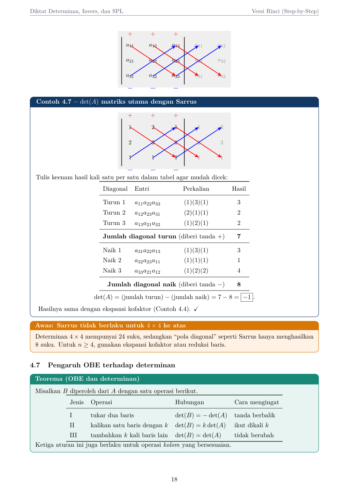
hal. 19 · contoh Sarrus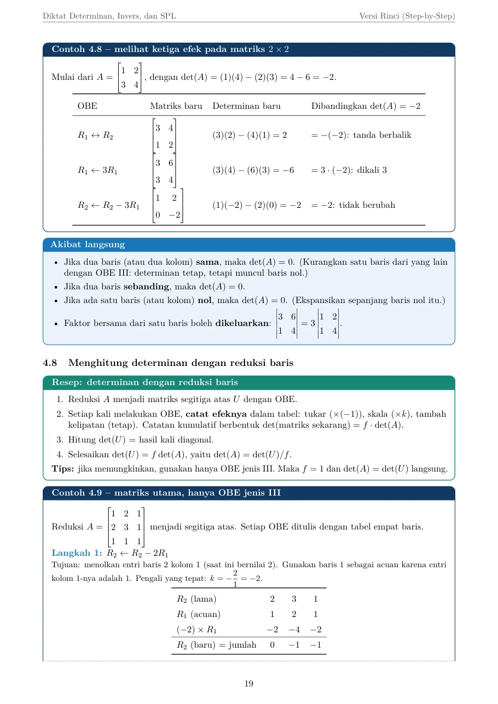
hal. 20 · tiga efek OBE pada determinan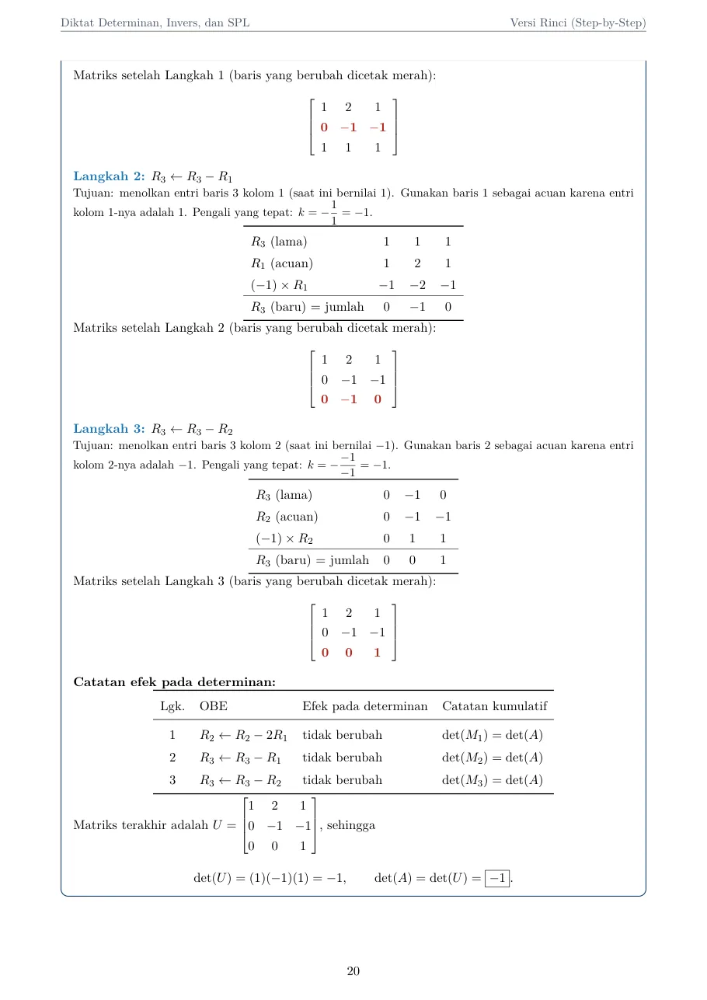
hal. 21 · contoh 4.8 setelah langkah 1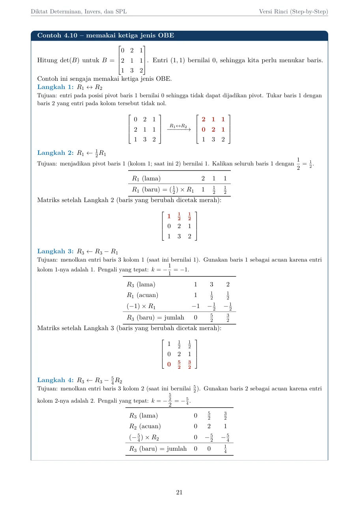
hal. 22 · contoh 4.10: ketiga jenis OBE sekaligus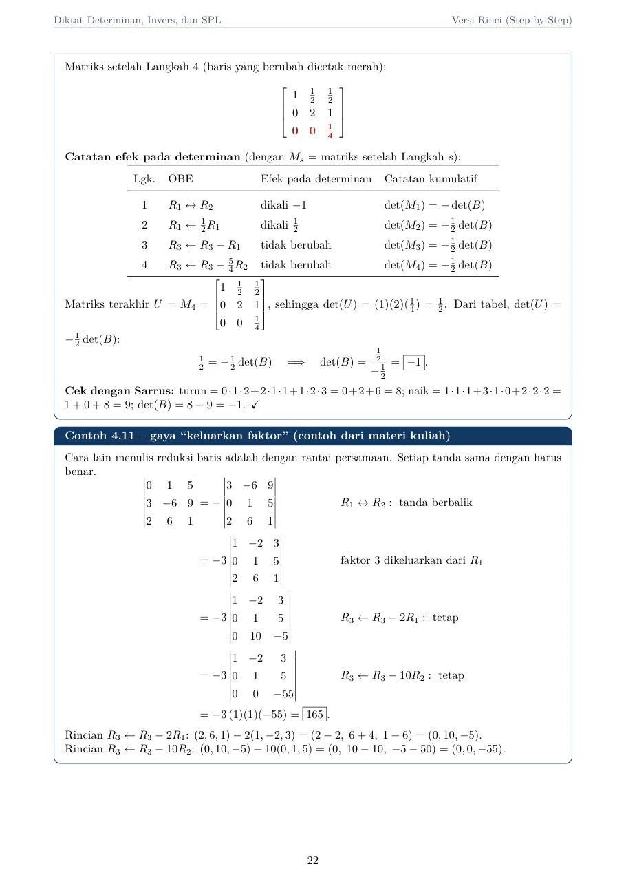
hal. 23 · contoh 4.10 setelah langkah 4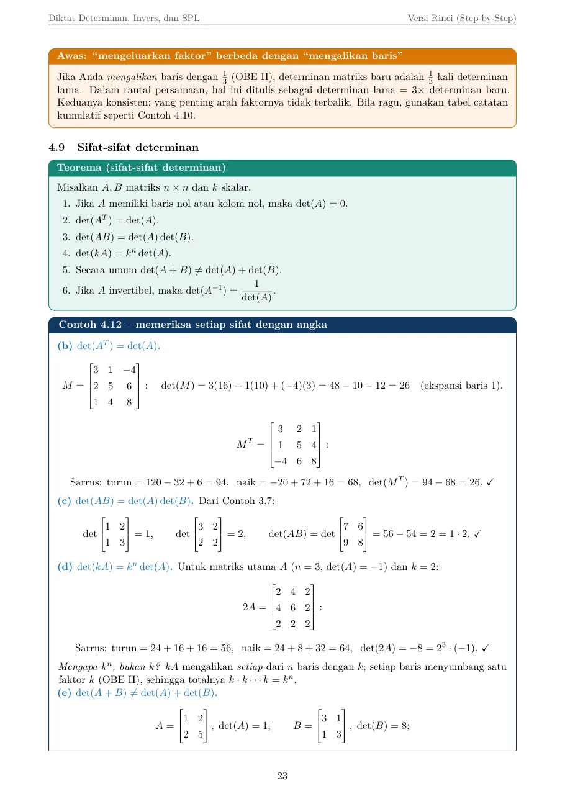
hal. 24 · awas: mengeluarkan faktor dari baris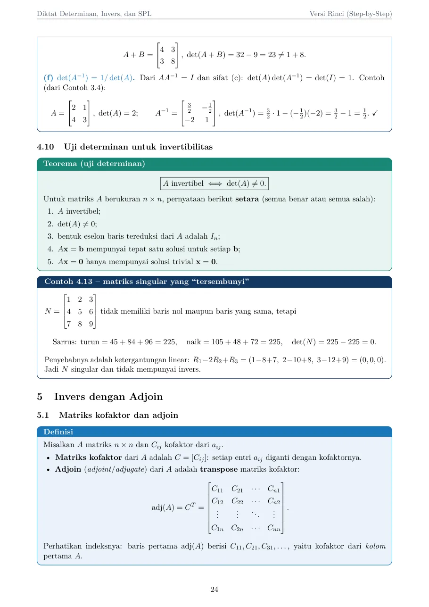
hal. 25 · det(A+B) tidak sama dengan det A + det BUntuk \(4\times4\) dan seterusnya tidak ada versi Sarrus. Yang berlaku: ekspansi kofaktor, atau reduksi baris ke bentuk segitiga. Kalau di ujian ketemu \(4\times4\), cari baris/kolom dengan banyak nol lalu ekspansi bertingkat.
Kalau semua entri di satu sisi diagonal utama nol, determinannya hasil kali diagonal:
\[ \det\begin{pmatrix}2&5&-1\\0&3&4\\0&0&-2\end{pmatrix}=2\cdot3\cdot(-2)=-12 \]Ini yang bikin reduksi baris jadi cara hitung determinan tercepat untuk matriks besar: bawa ke bentuk segitiga, kalikan diagonalnya.
| Operasi | Efek pada \(\det\) |
|---|---|
| \(R_i \leftrightarrow R_j\) (tukar baris) | tanda berubah: \(\det \to -\det\) |
| \(R_i \leftarrow kR_i\) | \(\det \to k\det\) |
| \(R_i \leftarrow R_i+kR_j\) | tidak berubah |
| Baris berisi nol semua | \(\det = 0\) |
| Dua baris identik / proporsional | \(\det = 0\) |
Langkah 1 — taruh pivot 1 di kiri atas
Tukar \(R_1 \leftrightarrow R_3\). Setiap tukar membalik tanda, jadi catat faktor \(-1\):
\[ \det R=-\det\begin{pmatrix}1&1&1\\3&-1&2\\0&2&1\end{pmatrix} \]Langkah 2 — nolkan kolom pertama
\(R_2 \leftarrow R_2-3R_1\) (tidak mengubah nilai):
\[ \det R=-\det\begin{pmatrix}1&1&1\\0&-4&-1\\0&2&1\end{pmatrix} \]Langkah 3 — nolkan bawah pivot kedua
\(R_3 \leftarrow R_3+\tfrac12 R_2\):
\[ \det R=-\det\begin{pmatrix}1&1&1\\0&-4&-1\\0&0&\tfrac12\end{pmatrix}=-\left(1\cdot(-4)\cdot\tfrac12\right)=2 \]| Sifat | Bentuk |
|---|---|
| Transpose | \(\det(A^T)=\det(A)\) |
| Perkalian | \(\det(AB)=\det A\cdot\det B\) |
| Skalar | \(\det(kA)=k^n\det A\) untuk \(A\) berukuran \(n\times n\) |
| Invers | \(\det(A^{-1})=\dfrac{1}{\det A}\) |
| Pangkat | \(\det(A^k)=(\det A)^k\) |
| Singular | \(\det A=0 \iff A\) tidak punya invers |
Contoh pemakaian: kalau \(\det X=3\), \(\det Y=-2\), maka \(\det(XY)=-6\), \(\det(3X)=3^2\cdot3=27\) (untuk \(2\times2\)), \(\det(X^{-1})=\tfrac13\). Perhatikan \(3^n\), bukan \(3\) — ini jebakan favorit.
Cek jawaban
Cek jawaban
Cek jawaban
Invers Matriks
Invers itu “pembatalan” versi matriks. Hanya matriks persegi yang punya invers, dan hanya kalau determinannya bukan nol. Di UTS dia muncul dua kali: sebagai soal tersendiri, dan sebagai metode menyelesaikan SPL (\(x=A^{-1}b\)).
Analogi: tombol undo
\(A\) mengubah vektor \(x\) jadi \(b\). Kalau prosesnya tidak menghilangkan informasi, ada tombol undo yang mengembalikan \(b\) ke \(x\) — itulah \(A^{-1}\). Syarat “tidak menghilangkan informasi” persis \(\det A\neq0\).
\(A\) berukuran \(n\times n\) disebut invertible jika ada \(B\) sehingga \(AB=BA=I_n\); \(B\) ditulis \(A^{-1}\).
- Bukan persegi → tidak punya invers (bukan soal “sulit dihitung”, memang tidak terdefinisi).
- \(\det A=0\) → singular, tidak punya invers.
- \(\det A\neq0\) → pasti punya invers, dan tunggal.
Polanya: tukar diagonal utama, ganti tanda dua entri lainnya, bagi dengan determinan. Contoh \(A=\begin{pmatrix}4&7\\2&6\end{pmatrix}\), \(\det A=10\):
\[ A^{-1}=\frac{1}{10}\begin{pmatrix}6&-7\\-2&4\end{pmatrix}=\begin{pmatrix}0{,}6&-0{,}7\\-0{,}2&0{,}4\end{pmatrix} \]Cek: baris 1 \(A\) kali kolom 1 \(A^{-1}\) = \(4(0{,}6)+7(-0{,}2)=2{,}4-1{,}4=1\) ✓; baris 1 kali kolom 2 = \(4(-0{,}7)+7(0{,}4)=-2{,}8+2{,}8=0\) ✓.
Pertama, lupa membagi dengan determinan (paling sering). Kedua, menukar posisi \(b\) dan \(c\) — yang ditukar hanya \(a\) dan \(d\); \(b\) dan \(c\) cuma berubah tanda.
\(C\) = matriks kofaktor, lalu transpose-kan. Urutan ini yang sering terlewat: kofaktor dulu, transpose belakangan. (Kalau langsung ditranspose di awal, hasilnya salah kecuali matriksnya simetris.)
Langkah 1 — determinan
Ekspansi baris 1:
\[ \det A=1(0-24)-2(0-20)+3(0-5)=-24+40-15=1 \]Langkah 2 — sembilan kofaktor
| \(C_{11}=+(0-24)=-24\) | \(C_{12}=-(0-20)=20\) | \(C_{13}=+(0-5)=-5\) |
| \(C_{21}=-(0-18)=18\) | \(C_{22}=+(0-15)=-15\) | \(C_{23}=-(6-10)=4\) |
| \(C_{31}=+(8-3)=5\) | \(C_{32}=-(4-0)=-4\) | \(C_{33}=+(1-0)=1\) |
Langkah 3 — transpose kofaktor jadi adjoin
\[ \operatorname{adj}(A)=\begin{pmatrix}-24&18&5\\20&-15&-4\\-5&4&1\end{pmatrix} \]Langkah 4 — bagi dengan determinan
Tempel identitas di kanan, lalu lakukan OBE sampai sisi kiri jadi \(I\). Sisi kanan otomatis jadi \(A^{-1}\). Kalau di tengah jalan muncul baris nol di kiri, matriksnya singular — berhenti dan tulis “tidak punya invers”.
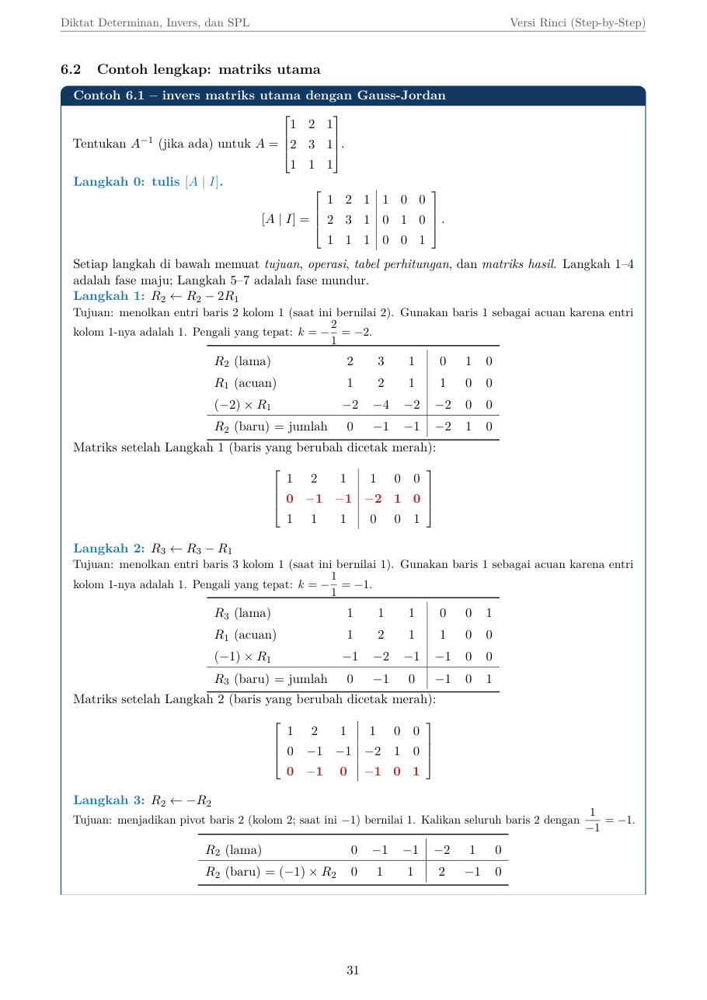
hal. 32 · contoh Gauss-Jordan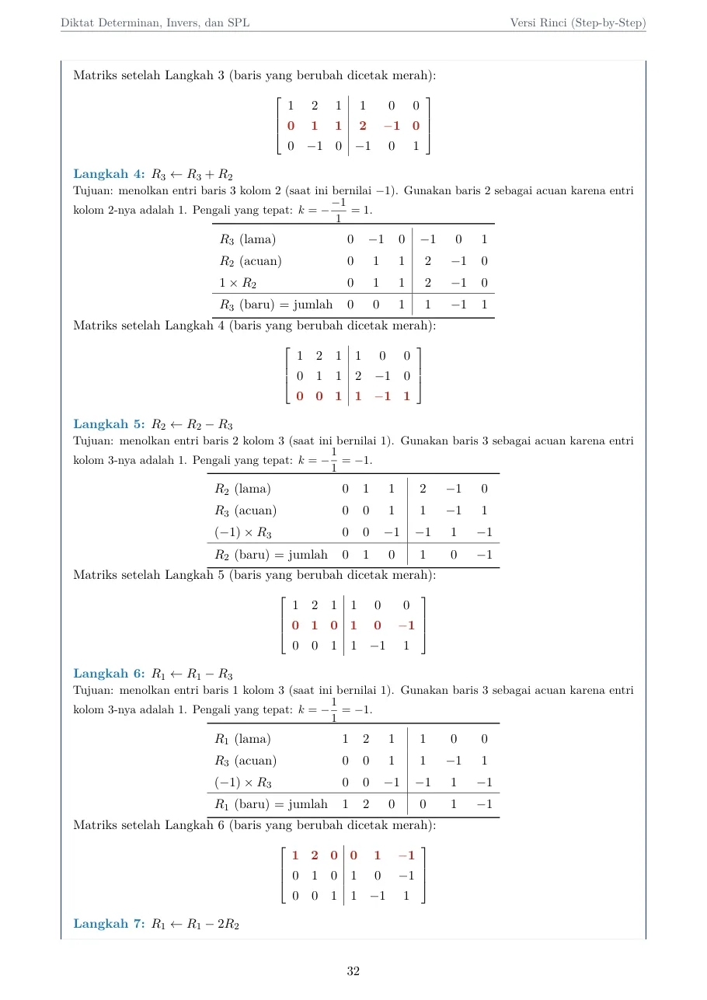
hal. 33 · Gauss-Jordan: langkah 4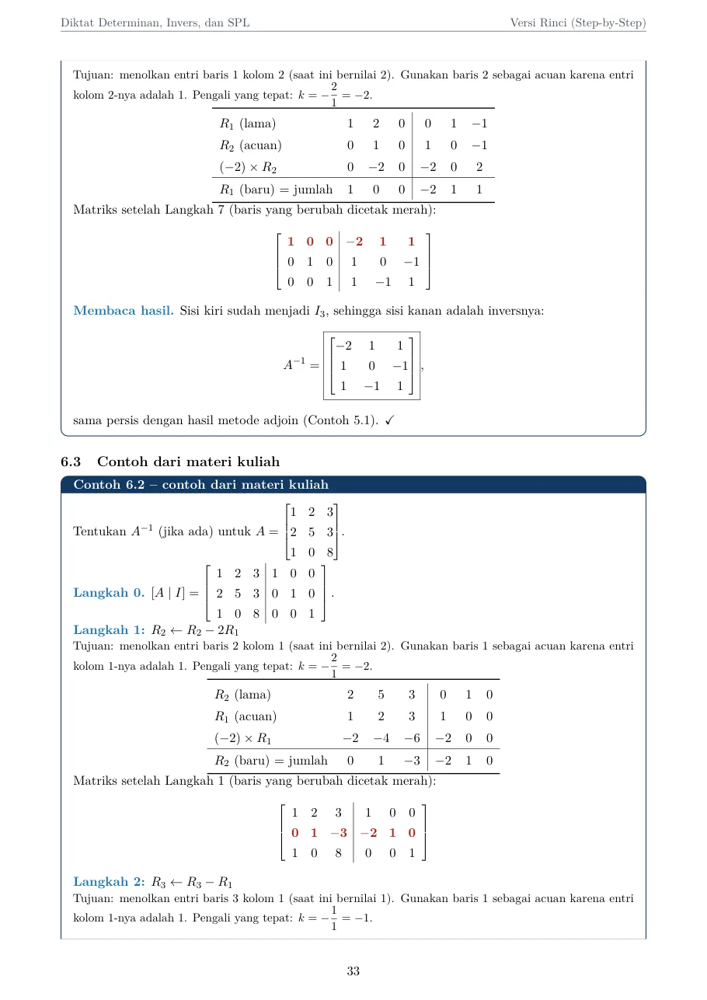
hal. 34 · Gauss-Jordan: menolkan kolom 2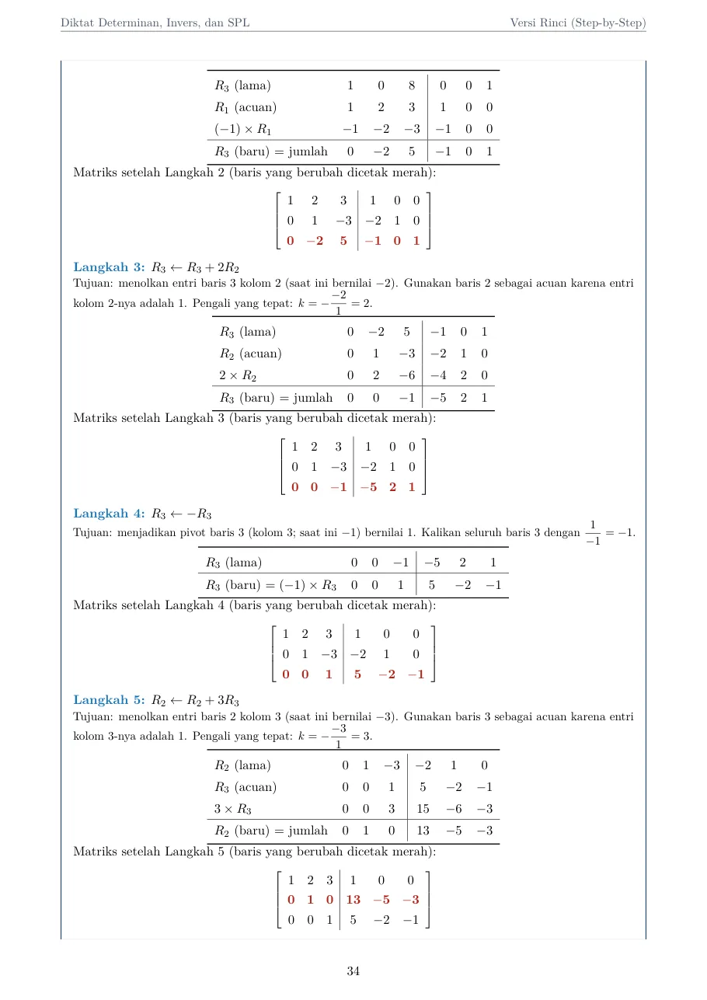
hal. 35 · Gauss-Jordan: R1 sebagai baris acuan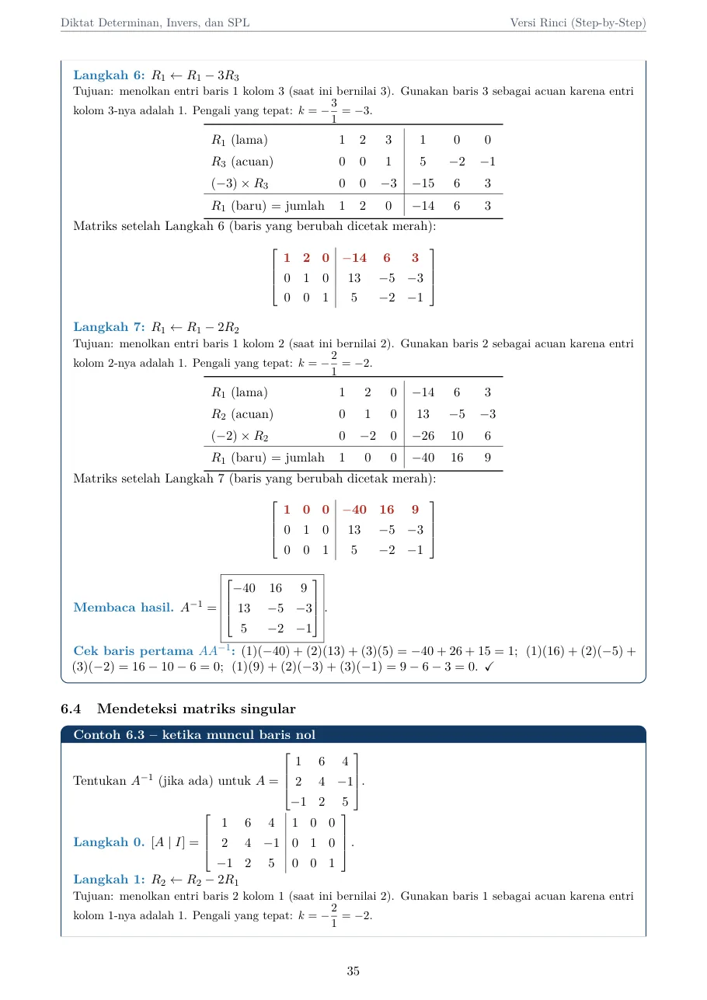
hal. 36 · Gauss-Jordan: langkah 6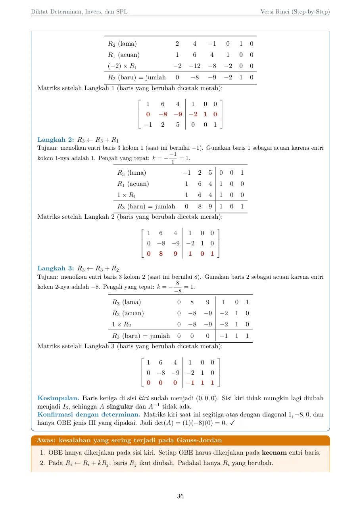
hal. 37 · Gauss-Jordan: jangan pakai baris lama hal. 38 · tiga kesalahan OBE yang sering terjadi| Sifat | Bentuk |
|---|---|
| Involusi | \((A^{-1})^{-1}=A\) |
| Perkalian (dibalik) | \((AB)^{-1}=B^{-1}A^{-1}\) |
| Transpose | \((A^T)^{-1}=(A^{-1})^T\) |
| Skalar | \((kA)^{-1}=\dfrac1k A^{-1}\), \(k\neq0\) |
| Determinan | \(\det(A^{-1})=\dfrac{1}{\det A}\) |
| Pangkat | \((A^k)^{-1}=(A^{-1})^k\) |
| Diagonal | inversnya = balik tiap entri diagonal |
Contoh diagonal: \(\begin{pmatrix}2&0&0\\0&4&0\\0&0&5\end{pmatrix}^{-1}=\begin{pmatrix}\frac12&0&0\\0&\frac14&0\\0&0&\frac15\end{pmatrix}\). Ini hadiah gratis — kalau ketemu matriks diagonal atau segitiga, jangan buang waktu dengan adjoin.
Cek jawaban
Cek jawaban
Cek jawaban
SPL: Metode Invers & Cramer
Lu sudah punya tiga cara: OBE (paling umum), invers, Cramer. Di ujian, kadang dosen minta metode tertentu. Jadi jangan cuma tahu jawabannya — harus bisa pilih metode yang diminta dan tunjukkan jalurnya.
Dari \(Ax=b\), kalikan kiri dengan \(A^{-1}\): \(A^{-1}Ax=A^{-1}b\), maka \(Ix=A^{-1}b\) dan \(x=A^{-1}b\). Syarat wajib: \(A\) persegi dan \(\det A\neq0\).
Langkah 1 — cek determinan
\(\det A=6-1=5\neq0\) → invers ada.
Langkah 2 — cari invers
\[ A^{-1}=\frac15\begin{pmatrix}3&-1\\-1&2\end{pmatrix} \]Langkah 3 — kalikan dengan \(b\)
\[ x=A^{-1}b=\frac15\begin{pmatrix}3&-1\\-1&2\end{pmatrix}\begin{pmatrix}5\\7\end{pmatrix}=\frac15\begin{pmatrix}15-7\\-5+14\end{pmatrix}=\begin{pmatrix}\frac85\\\frac95\end{pmatrix} \]Untuk sistem \(n\) persamaan dengan \(n\) variabel, definisikan \(D=\det A\). Untuk variabel ke-\(j\), ganti kolom ke-\(j\) pada \(A\) dengan vektor \(b\), lalu hitung determinannya \(D_j\):
\[ x_j=\frac{D_j}{D},\qquad D\neq0 \]Aturan Cramer cepat untuk matriks kecil, tapi tedioso untuk matriks besar: perlu \(n+1\) determinan. Kalau matriks 3×3, tiga Sarrus + satu penyebut masih masuk akal.
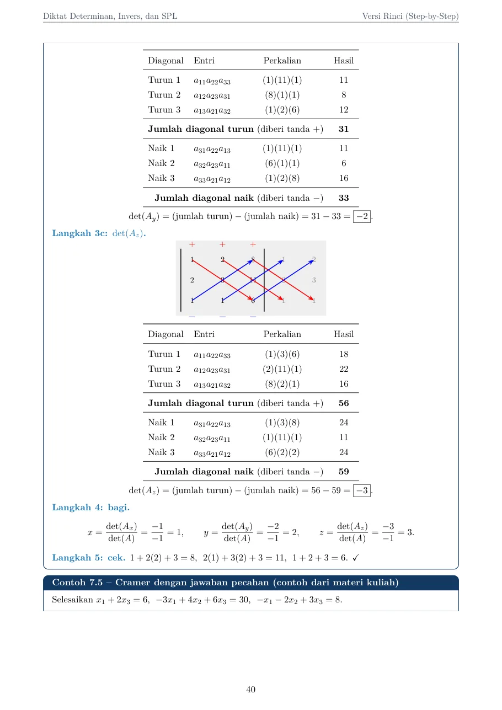
hal. 41 · tabel Sarrus untuk det 3x3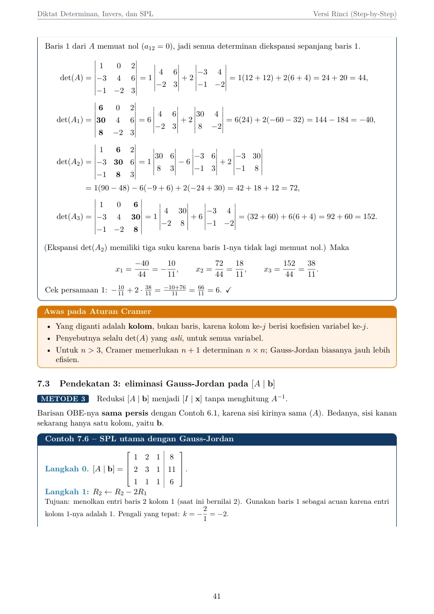
hal. 42 · Cramer: det(A) dan det(A1)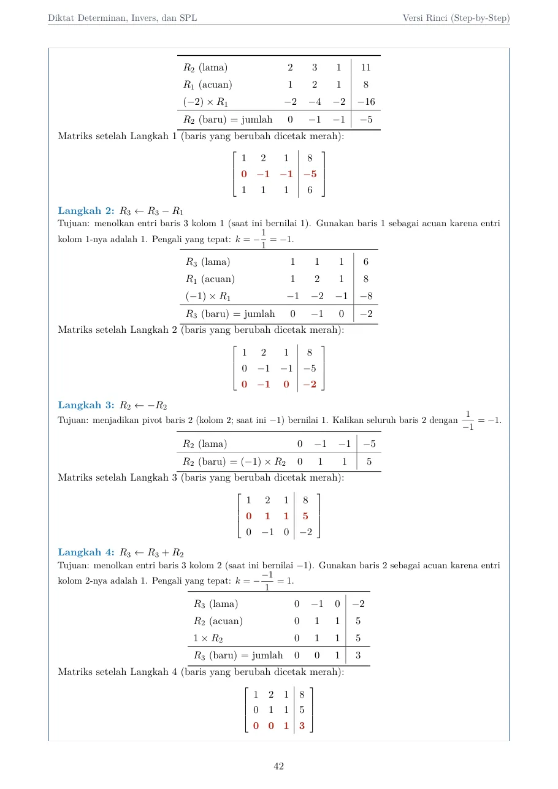
hal. 43 · SPL 3x3: OBE langkah 1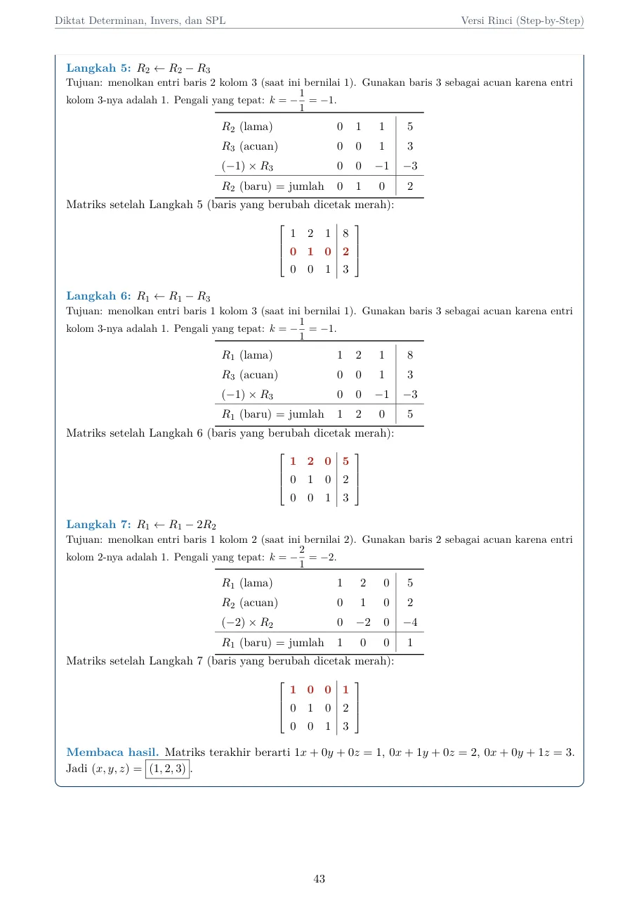
hal. 44 · SPL 3x3: lanjutan eliminasi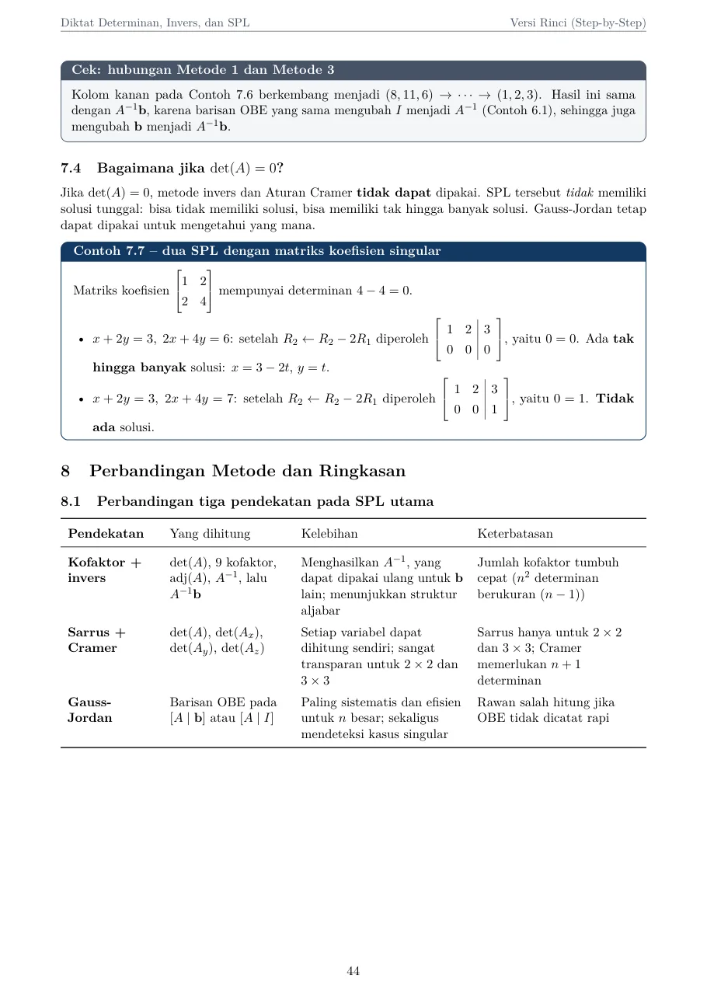
hal. 45 · cek hubungan Metode 1 dan Metode 3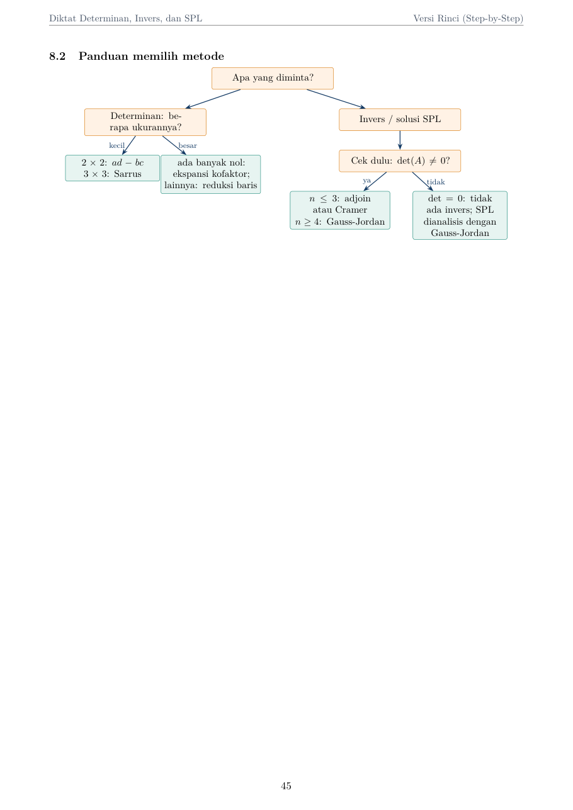
hal. 46 · panduan metode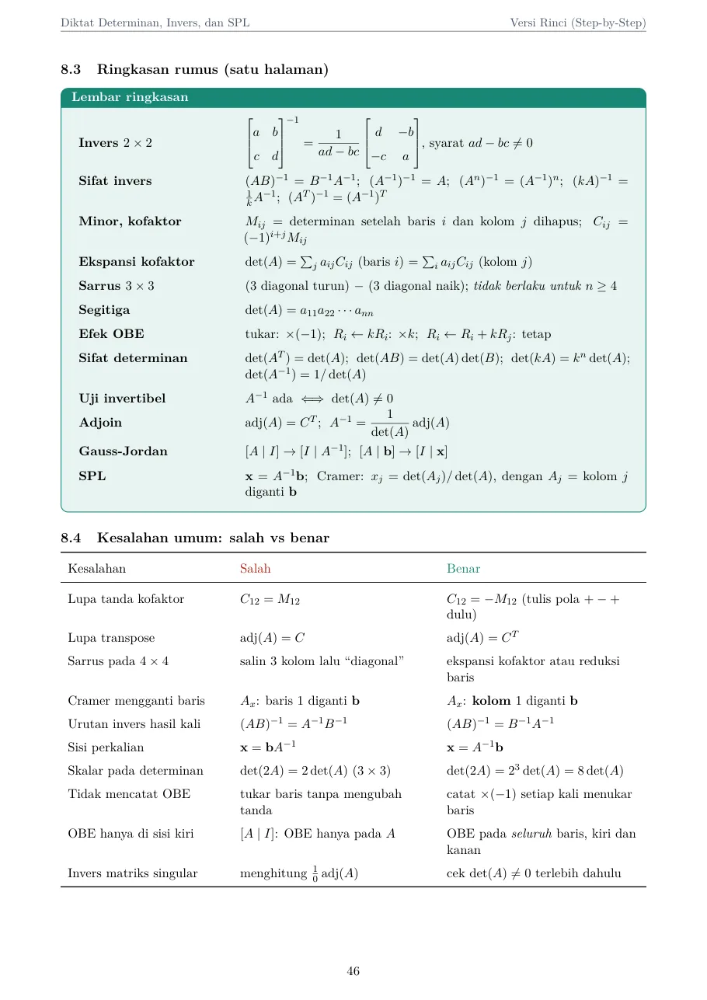
hal. 47 · ringkasan rumus satu halamanWaktu menghitung \(D_x\), ganti kolom x dengan \(b\), bukan baris pertama. Tulis label \(D_x,D_y,D_z\) di atas setiap determinan supaya tidak ketuker.
Langkah 1 — determinan utama \(D\)
\[ D=\begin{vmatrix}2&1&-1\\-3&-1&2\\-2&1&2\end{vmatrix}=2(-2-2)-1(-6+4)+(-1)(-3-2)=-8+2+5=-1 \]\(D=-1\neq0\) → sistem punya solusi tunggal, Cramer berlaku. Tanda minus di penyebut akan membalik tanda semua hasil, jadi jangan panik kalau \(D\) negatif.
Langkah 2 — ganti kolom x dengan \(b\)
\[ D_x=\begin{vmatrix}8&1&-1\\-11&-1&2\\-3&1&2\end{vmatrix}=8(-2-2)-1(-22+6)+(-1)(-11-3)=-32+16+14=-2 \]Langkah 3 — ganti kolom y
\[ D_y=\begin{vmatrix}2&8&-1\\-3&-11&2\\-2&-3&2\end{vmatrix}=2(-22+6)-8(-6+4)+(-1)(9-22)=-32+16+13=-3 \]Langkah 4 — ganti kolom z
\[ D_z=\begin{vmatrix}2&1&8\\-3&-1&-11\\-2&1&-3\end{vmatrix}=2(3+11)-1(9-22)+8(-3-2)=28+13-40=1 \]| Metode | Kapan efisien | Jangan dipakai kalau |
|---|---|---|
| Gauss-Jordan (OBE) | Umum; solusi parametrik; sistem tak persegi | Kalau diminta eksplisit metode lain (ikuti instruksi) |
| Invers | \(2\times2\) / \(3\times3\) dengan \(\det A\neq0\); mau cari beberapa \(b\) untuk \(A\) sama | \(A\) singular atau tak persegi |
| Cramer | \(2\times2\) / \(3\times3\), solusi tunggal, determinan mudah | \(\det A=0\) atau ukuran besar |
Cek jawaban
Cek jawaban
Vektor: Norma, Dot & Cross Product
Vektor punya arah dan panjang; kita tulis sebagai daftar komponen. Di \(R^3\), \(\mathbf u=(u_1,u_2,u_3)\). Operasi yang di kisi-kisi: dot (hasilnya skalar) dan cross (hasilnya vektor). Jangan tertukar — ini kesalahan yang bikin jawaban satu nomor berantakan.
Analogi: bayangan & gaya
Dot mengukur “seberapa searah” dua vektor — seperti seberapa kuat satu gaya mendorong ke arah perpindahan. Hasilnya angka. Cross mencari arah yang tegak lurus ke dua vektor sekaligus — seperti poros putaran yang dibentuk oleh dua batang.
Penjumlahan dan skalar dilakukan per komponen: \((1,2,3)+(2,-1,0)=(3,1,3)\); \(-2(1,2,3)=(-2,-4,-6)\).
Contoh: \(u=(3,4,0)\), \(\|u\|=\sqrt{9+16}=5\), maka \(\hat u=(\tfrac35,\tfrac45,0)\).
- \(u\cdot v>0\): sudut lancip; \(=0\): tegak lurus; \(<0\): sudut tumpul.
- Kalau mau cari sudut: \(\cos\theta=\dfrac{u\cdot v}{\|u\|\|v\|}\). Jangan lupa norma kedua vektor di penyebut.
- Jika salah satu vektor nol, sudut tidak terdefinisi.
Langkah 1 — dot
\(u\cdot v=1(3)+2(0)+(-2)(1)=3-2=1\).
Langkah 2 — norma
\(\|u\|=\sqrt{1+4+4}=3\); \(\|v\|=\sqrt{9+0+1}=\sqrt{10}\).
Langkah 3 — cari sudut
\[ \cos\theta=\frac1{3\sqrt{10}} \]Hitung dengan determinan simbolik (komponen tengah tanda negatif):
\[ u\times v=\begin{vmatrix}\mathbf i&\mathbf j&\mathbf k\\u_1&u_2&u_3\\v_1&v_2&v_3\end{vmatrix}=(u_2v_3-u_3v_2,\;u_3v_1-u_1v_3,\;u_1v_2-u_2v_1) \]Urutannya berpengaruh: \(u\times v=-(v\times u)\). Hasil tegak lurus pada keduanya: \(u\cdot(u\times v)=0\), \(v\cdot(u\times v)=0\). Besar hasil = \(\|u\|\|v\|\sin\theta\), luas jajargenjang yang dibentang kedua vektor.
Langkah 1 — hitung komponen
\[ u\times v=(2(1)-(-2)(0),\;(-2)(3)-1(1),\;1(0)-2(3))=(2,-7,-6) \]Langkah 2 — cek ortogonal ke \(u\)
\[ u\cdot(u\times v)=1(2)+2(-7)+(-2)(-6)=2-14+12=0 \quad\checkmark \]Langkah 3 — cek ortogonal ke \(v\)
\[ v\cdot(u\times v)=3(2)+0(-7)+1(-6)=6-6=0 \quad\checkmark \]Ini “bayangan” \(u\) ke arah \(a\). Skalarnya = berapa jauh bayangan itu menempuh arah \(a\); dikalikan vektor arah \(a\) supaya hasilnya jadi vektor, bukan sekadar angka.
Contoh LMS: \(u=(3,4),\;a=(1,0)\). \(u\cdot a=3\), \(a\cdot a=1\), jadi \(\operatorname{proj}_a u=3(1,0)=(3,0)\) — komponen horizontal saja.
Ekspansi determinan sepanjang baris pertama memberi \(\mathbf i(u_2v_3-u_3v_2)-\mathbf j(u_1v_3-u_3v_1)+\mathbf k(u_1v_2-u_2v_1)\). Susun ulang komponen tengah menjadi \(u_3v_1-u_1v_3\). Cara aman: tulis tiga komponen dalam kurung seperti rumus di atas, jangan hafalkan pola diagonal tanpa tanda.
Cek jawaban
Cek jawaban
Cek jawaban
Strategi Ujian & Rencana H-1
Kerjakan soal di halaman Latihan dengan kertas kosong. Kalau mentok, baca langkah yang sesuai di modul, lalu tutup lagi dan ulangi. Itu cara paling cepat menemukan lubang sebelum ujian.
- Baca instruksi metode. Kalau diminta Cramer, jangan jawab pakai Gauss-Jordan walau lebih gampang.
- Salin matriks koefisien dan \(b\). Periksa urutan variabel dan tanda negatif.
- Cek syarat sebelum hitung. Determinan nol? Cramer/invers tidak berlaku; pakai OBE untuk jenis solusi.
- Tulis operasi baris eksplisit. Satu operasi per langkah; jangan melompat dari awal ke RREF.
- Cek substitusi / identitas. SPL: masukkan solusi ke satu atau dua persamaan. Invers: satu perkalian \(AA^{-1}\). Vektor: dot dengan hasil cross harus nol.
- Tulis kesimpulan dalam notasi yang diminta. Vektor solusi, parameter \(t\in\mathbb R\), matriks, atau nilai sudut — jangan berhenti di hitungan antara.
| Durasi | Kerjaan | Output yang harus kelihatan |
|---|---|---|
| 45 menit | Modul 1: 2 soal OBE + klasifikasi solusi | Refleks baca pivot & baris kontradiksi |
| 25 menit | Modul 2: operasi & sifat benar/salah | Ukuran + urutan perkalian |
| 40 menit | Modul 3–4: det 3×3, invers 2×2 & satu 3×3 | Hitung tanpa kalkulator, cek hasil |
| 35 menit | Modul 5: satu invers + satu Cramer | Jangan tukar kolom \(D_x,D_y,D_z\) |
| 30 menit | Modul 6: dot, cross, proyeksi | Cek ortogonal dan norma |
| 35 menit | Latihan preexam full, tutup pembahasan | Kerjakan mandiri, tandai soal yang macet |
| 20 menit | Salin Cheat Sheet ke A4 dua sisi | Tulis sendiri, bukan print |
| 10 menit | Review 3 kesalahanmu, stop belajar | Masuk ujian dengan kepala jernih |
Deck resmi sesi 1–7, diktat Determinan/Invers/SPL Sesi 05–07, ringkasan Vektor LMS, dan lembar Latihan-1. Buka halaman depan buat peta materinya; soal lengkap dengan pembahasan ada di Latihan & Pembahasan; contekan untuk disalin ada di Cheat Sheet A4.